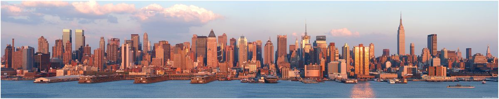

Before becoming a household name and a fashion icon, Timothée Chalamet built a rigorous foundation in the performing arts. Raised in the Hell's Kitchen neighborhood of Manhattan, Chalamet’s journey began not in Hollywood, but in the competitive world of New York theater and independent cinema.

Chalamet attended the prestigious Fiorello H. LaGuardia High School of Music & Art and Performing Arts. It was here that he honed his craft, starring in school productions like Cabaret and Sweet Charity. His professional stage debut came in 2011 with the Off-Broadway play The Talls, a coming-of-age comedy where he played a precocious 12-year-old. Even in these early years, critics noted his "natural poise" and ability to command attention without overacting.
Like many New York actors, Chalamet’s early screen credits included staples of the industry: